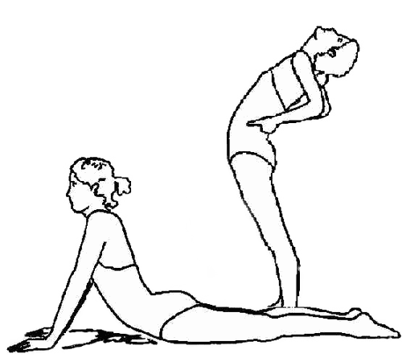
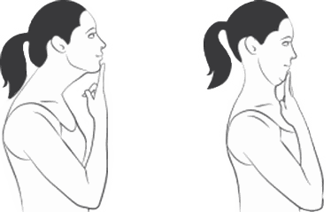
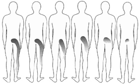
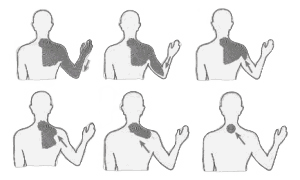

McKenzie methode
McKenzie therapie is ontwikkeld voor patiënten met rug - of nekklachten, mét of zonder uitstraling naar armen of benen.
Een “verkeerde” houding die al zoveel jaar aanwezig is, is niet eenvoudig te veranderen. Houdingsadvies is hierbij belangrijk maar ook heel moeilijk om vast te houden. Vanuit de McKenzie wordt er veel gewerkt met "repeated movements”, oftewel een bepaalde oefening heel vaak doen. Vaak is het een simpele oefening maar wel met de vraag die 5 a 6 keer per dag uit te voeren. Dit zorgt ervoor dat de belasting van de nek of de rug elke dag met grote regelmatig wordt verminderd en zodoende in toenemende mate effectief wordt ontlast.


Er wordt bij McKenzie therapie per individuele nek of rug gekeken welke bewegingen fijn zijn en welke niet. Waar wordt deze nek of rug beter van en welke geeft juist klachten?
Middels herhaalde bewegingen waarbij de pijn vrijwel direct wegtrekt ofwel even erger wordt, wordt een beeld verkregen van hoe de wervelkolom reageert op deze bewegingen en dús hoe de pijn georganiseerd is (de gevonden voorkeursrichting), en belangrijker nog, hoe de pijn zich weer kan terugtrekken. Dit wegtrekken van de pijn noemt men centralisatie.
Bij een pijnklacht in bijvoorbeeld de schouder kan met bepaalde nek-en/of rugbewegingen de pijn uit de schouder terugtrekken. Zo ook, kan met pijn in het been door middel van bepaalde herhaalde bewegingen in de rug, het centralisatie-fenomeen optreden waarbij de pijn in het been wegtrekt.


Afhankelijk van hoe het klachtenbeeld reageert op de bewegingen, wordt de klachten ingedeeld in drie categorieën, te weten; 1) Derangement 2) Dysfunctie of 3) Posturaal syndroom. Aan de hand van deze indeling kan een schatting gemaakt worden van het beloop.
Zelfbehandeling en preventie van recidieve staan bij McKenzie hoog in het vaandel. Zo heeft de patiënt een stuk eigenaarschap en controle over zijn/haar klachtenbeloop.